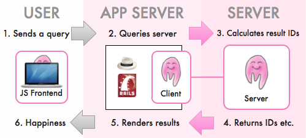

This takes about 5 minutes. After that, you'll have a running Picky server and a web frontend to play with.
Before we start, the big picture:
That's the basic setup. The things to remember are:
Together they are like a small A-Team, something like "Action Search Squad Alpha"! «We've got the results and are heading back to base now, Sir!» Bam!
Note that you don't need a Picky client. You could just as well use the results in your Python/Java/PHP app server (If you happen to write a client for one of these, please let me know).
I recommend RVM for installing and managing Ruby versions.
gem install picky-generators
This will also install the needed gems "picky" and "picky-client".
The server generates a library example, which you can run right away.
# Generates a directory "app_name"
# with a new Picky default server project.
# Type "picky generate" to see other options.
picky generate server app_name
cd app_name
bundle install
rake index
rake start
curl localhost:8080/books?query=test
Don't worry about the strange looking results! The next part (client) will take care of them.
If you're interested anyway: Results (Format & Structure)
The client generates an example app for the "library" example backend, using Sinatra.
# Generates a directory "app_name"
# with a new Picky client Sinatra project.
picky generate client app_name
cd app_name bundle install
unicorn -p 3000
Go to http://localhost:3000/ and try the examples.
You're probably itching to change the example for your own data. How do you do this?
In the server directory, just type
rake todo
and it will tell you where to change the server configuration.
Go to http://localhost:3000/configure and the page will show you how to configure your app server.
That's it, congratulations! :)
Right here. I'm happy to help! If something doesn't work, send/gist me your app/application.rb and I'll look into it.
github (floere), twitter (hanke), mail (gmail)
There's a Wiki as well: Picky Wiki
If you don't have the time or leisure to do it yourself, watch this:
Note that the video was made with version 1.0.0.
In the latest version, instead of
picky project <server dir>
picky-client sinatra <client dir>
the following commands are now used:
picky generate unicorn_server <server dir>
picky generate sinatra_client <client dir>
A bit more wordy, but hopefully clearer what it does.